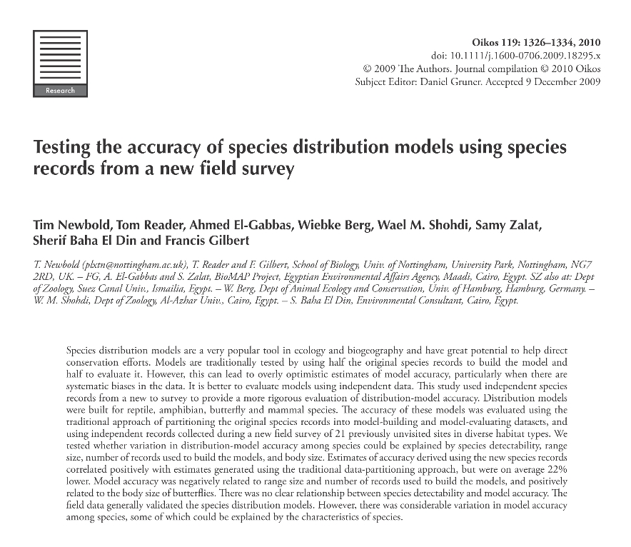

Tim Newbold; Tom Reader; Ahmed El-Gabbas; Wiebke Berg; Wael M. Shohdi; Samy Zalat; Sherif Baha El Din; Francis Gilbert (2010). Testing the accuracy of species distribution models using species records from a new field survey. Oikos, 119(8): 1326-1334.
DOI:10.1111/j.1600-0706.2009.18295.x
Abstract:
Species distribution models are a very popular tool in ecology and biogeography and have great potential to help direct conservation efforts. Models are traditionally tested by using half the original species records to build the model and half to evaluate
it. However, this can lead to overly optimistic estimates of model accuracy, particularly when there are systematic biases in the data. It is better to evaluate models using independent data. This study used independent species records from
a new to survey to provide a more rigorous evaluation of distribution-model accuracy. Distribution models were built for reptile, amphibian, butterfly and mammal species. The accuracy of these models was evaluated using the traditional approach
of partitioning the original species records into model-building and model-evaluating datasets, and using independent records collected during a new field survey of 21 previously unvisited sites in diverse habitat types. We tested whether
variation in distribution-model accuracy among species could be explained by species detectability, range size, number of records used to build the models, and body size. Estimates of accuracy derived using the new species records correlated
positively with estimates generated using the traditional data-partitioning approach, but were on average 22% lower. Model accuracy was negatively related to range size and number of records used to build the models, and positively related
to the body size of butterflies. There was no clear relationship between species detectability and model accuracy. The field data generally validated the species distribution models. However, there was considerable variation in model accuracy
among species, some of which could be explained by the characteristics of species.
|

|
Download PDF

|
Tim Newbold, Tom Reader, Ahmed El-Gabbas, Wiebke Berg, Wael M. Shohdi, Samy Zalat, Sherif Baha El Din & Francis Gilbert 2010
Testing the accuracy of species distribution models using species records from a new field survey
Oikos, 119(8):
1326–1334
10.1111/j.1600-0706.2009.18295.x
Species distribution models are a very popular tool in ecology and biogeography and have great potential to help direct conservation efforts. Models are traditionally tested by using half the
original species records to build the model and half to evaluate it. However, this can lead to overly optimistic estimates of model accuracy, particularly when there are systematic biases in the data. It is better to evaluate models using independent
data. This study used independent species records from a new to survey to provide a more rigorous evaluation of distribution-model accuracy. Distribution models were built for reptile, amphibian, butterfly and mammal species. The accuracy of these
models was evaluated using the traditional approach of partitioning the original species records into model-building and model-evaluating datasets, and using independent records collected during a new field survey of 21 previously unvisited sites
in diverse habitat types. We tested whether variation in distribution-model accuracy among species could be explained by species detectability, range size, number of records used to build the models, and body size. Estimates of accuracy derived
using the new species records correlated positively with estimates generated using the traditional data-partitioning approach, but were on average 22% lower. Model accuracy was negatively related to range size and number of records used to build
the models, and positively related to the body size of butterflies. There was no clear relationship between species detectability and model accuracy. The field data generally validated the species distribution models. However, there was considerable
variation in model accuracy among species, some of which could be explained by the characteristics of species.
Species distribution models have great potential as tools for conservation. They relate a set of records of the occurrence of a
species to a set of variables describing relevant aspects of the environment in order to predict its distribution over the whole of the study area in question (reviewed by Wintle et al. 2005).
There is a vast amount of data on the distributions
of species in museums, natural history collections and the literature (Graham et al. 2004). However, there are several limitations associated with data from these sources. First, records are often accompanied by an imprecise description of the
locality from which they were taken. This translates into poor locational accuracy when the record is georeferenced (i.e. when it is assigned geographical coordinates, Graham et al. 2004). The effect of locational error in the species records
on the accuracy of distributional models is generally low, but varies among different types of model (Graham et al. 2008).
Second, museum data are often biased. Such bias could be: 1) spatial – towards areas to which it is easy for scientists
to gain access, or towards areas that are biologically interesting; 2) temporal – towards time periods when collecting was more frequent; or 3) taxonomic – towards species that are easy to detect or that are of more interest to the collectors
(Soberón 1999, Hijmans et al. 2000, Reddy and Dávalos 2003).
The third major problem with data from museums and literature sources is that there are rarely data documenting places where the species is known not to exist (absence records)
(Graham et al. 2004). There are modelling techniques designed to be used with datasets that consist only of presence records, such as climate envelope approaches and techniques that model the presences with reference to the background environmental
conditions (Wintle et al. 2005). However, several of the most popular modelling approaches, such as generalized linear models (GLMs) and generalized additive models (GAMs), can only be used with both presence and absence data. A commonly-used
solution to this problem is to generate random ‘pseudo-absence’ data in grid cells without presence records (Ferrier and Watson 1997). One obvious problem with using pseudo–absence data is that some absences are likely to be found in areas that
are suitable for, and even inhabited by, the species (Graham et al. 2004). Of course, recorded absence of species may also prove to be erroneous. Many species are very difficult to detect and it may take many visits to a site before species absence
can be inferred with any degree of confidence (Kéry 2002, MacKenzie et al. 2002). Given accurate species records from a well-designed survey, models built with only presence records have been shown to perform as well as models built with both
presences and absences (Wintle et al. 2005) and may present the safest option when there is uncertainty over the reliability of absence data.
Data from museums, collections and the literature are too valuable a source of data to ignore. However,
given the potential biases and inaccuracies associated with them, it is particularly important to test the accuracy of model predictions. The simplest way to test the accuracy of a species distribution model is to test its ability to predict correctly
the data used to build it in the first place (Fielding and Bell 1997). This is effectively a measure of goodness-of-fit of the model. The main drawback of this approach is that a model can fit the data used to build it very well without capturing
the species’ real response to the environmental variables (a phenomenon known as overfitting), and this method of model evaluation tends to lead to over-optimistic measures of model accuracy (Chatfield 1995). A better approach is to partition
the data in some way, building the model with part of the dataset and evaluating it against the remainder (Fielding and Bell 1997). This is the approach taken by most studies (Hernandez et al. 2008, Franklin et al. 2009). A problem with data-partitioning
approaches is that if the same bias in the species data is present in all partitions, then the model may be biased and the estimate of model accuracy inflated (Chatfield 1995). Ideally models should be evaluated using new, independent data on
species occurrence (Chatfield 1995). With the wide availability of global positioning systems (GPS), records can be assigned geographical coordinates on collection, eliminating the problem of locational errors. Bias should be reduced as much as
possible, particularly bias in environmental space (Wintle et al. 2005). Few studies have used independent data to validate models because collecting such data can be impractical, time-consuming and costly (Wintle et al. 2005, but see Loyn et
al. 2001, Elith 2002, Ferrier et al. 2002, Elith et al. 2006, Williams et al. 2009). To the best of our knowledge only one study, on Mexican birds (Feria and Peterson 2002), has used new, independent records to test the accuracy of distribution
models based on museum data. Given the potential limitations with records from museums, it is particularly important that the accuracy of models based on them are evaluated rigorously. We used independent records to test the accuracy of distribution
models for a variety of species in three separate taxonomic groups.
Even if one is confident of a lack of bias in the data, different kinds of species may be more or less suited to the model-building process. There have been attempts to assess
differences among species in the accuracy of their distribution models (Kadmon et al. 2003, Berg et al. 2004, Seoane et al. 2005, Hernandez et al. 2006, Newbold et al. 2009b). These studies have often found that species that are more narrowly
distributed produce more accurate distribution models, possibly because small-ranged species have better-defined habitat requirements and tend to inhabit a greater proportion of the suitable environment, or because in species with larger ranges,
populations show local adaptation to the environment in different areas (Stockwell and Peterson 2002, Brotons et al. 2004, Segurado and Araújo 2004, Hernandez et al. 2006, Newbold et al. 2009b). On the other hand, effects of range size could be
a statistical artefact associated with the use of pseudo-absence data (Lobo et al. 2008).
Species that are easier to detect are likely to have more complete occurrence data. This may result in more accurate distribution models for these species
(Seoane et al. 2005). For example, Pöyry et al. (2008) showed that the accuracy of distribution models for butterflies was positively related to wingspan, possibly owing to differences in detectability during surveys.
In this study, we modelled
the distributions of Egyptian butterfly, mammal, reptile and amphibian species using records from museums, collections and the literature, presenting a rare test of their accuracy using new, independently-collected survey data as well as a test
using the more traditional data-partitioning method. It was not possible to collect new species records systematically or randomly in the time available because of the remoteness and inaccessibility of many parts of Egypt, but the records were
completely independent of the data used to build the models, were designed to be representative of as many habitat types as possible, given the constraints imposed by the logistics of sampling in a remote and hostile environment, and were georeferenced
using a GPS and so had negligible locational error. We used the new survey data, which contain both presence and absence records, to test whether a negative effect of species range size on model accuracy persists in the absence of statistical
artefacts. We also tested whether model accuracy is related to species detectability and body size (of butterflies).
Data and methods
Distribution models were compiled for Egyptian butterfly, mammal, reptile and amphibian species using Maxent ver. 3.1.0 (Phillips et al. 2006). Maxent uses a machine-learning process to produce a model where the frequency distribution of
modelled probabilities is as close to uniform as possible, with the constraint that the expected value of each environmental variable (the sum, across all grid cells, of the product of the probability of occurrence and the value of the environmental
variable) must equal the mean value at the presence points (the empirical average). To prevent overfitting a process called regularization is adopted, relaxing this constraint such that the expected value of each environmental variable may fall
within a defined margin around the empirical average (Dudík et al. 2004). Maxent is particularly suited to use with museum data, because it designed to deal with datasets consisting only of presence records. The environmental conditions in a sample
of cells from throughout the whole study area is used for comparison with the environmental conditions in cells with species presence records in.
The species data used to build the models (hereafter referred to as the original species records)
were taken from the database complied as part of Egypt's BioMAP project ( www.biomapegypt.org for more details). Records were taken from museum and personal collections, and from the literature (Osborn and Helmy 1980, Larsen 1990). The identification
of all extant specimens was checked by experts (Samy Zalat, Sherif Baha-El-Din, Francis Gilbert, Dr Mohammad Basuony, Al Azhar Univ., Cairo), according to the latest taxonomic opinion (Larsen 1990, Wilson and Reeder 2005, Baha El Din 2006). All
records were mapped as accurately as possible using a gazetteer developed by the BioMAP project. We estimated the maximum error associated with each sampling location using the point radius method (Wieczorek et al. 2004) and removed records from
highly inaccurate localities. Given positive spatial autocorrelation in the environmental variables, a moderate degree of inaccuracy in the location of species records probably does not have a large effect on model accuracy (Graham et al. 2008).
The number of records available for each species ranged from 10 to 412 (median = 58); most records were made in the second half of the 20th century (Newbold et al. 2009a).
The environmental variables used in the models consisted of climate
and habitat variables. The climate variables were taken from the WorldClim ver. 1.4 dataset (Hijmans et al. 2005). This dataset includes 20 variables describing altitude, temperature and precipitation (Supplementary material Appendix 1). The habitat
variable used was a geological habitat classification with 11 categories (sea, littoral coastal land, cultivated land, sand dune, wadi, metamorphic rock, igneous rock, gravel, serir sand sheet, sabkha and sedimentary rock). This map was compiled
using satellite imagery, and was verified by extensive ground-truthing (A. Hassan unpubl.). Using 20 environmental variables might cause the models to be overfitted (Chatfield 1995). However, the Maxent model uses a process called regularization
to reduce the chance of overfitting and previous studies have shown that it can produce accurate models with small numbers of species records and similar numbers of environmental variables to our study (Wisz et al. 2008). To test whether this
was the case in our study, we built a separate set of distribution models using habitat and three principal component axes based on the climatic variables. Models developed using the two sets of variables were very similar (at 5000 random points
in Egypt modelled probabilities of occurrence correlated positively – Spearman's rank correlation: mean rs= 0.798 ± 0.02) and were not significantly different in accuracy (Wilcoxon's matched-pairs test: p = 0.122).
To create a second set
of species data (hereafter referred to as the independent species records) with which to evaluate the distribution models, we conducted a survey of butterflies, mammals, reptiles and amphibians in Egypt in the summers (May–July) of 2007 and 2008.
The reptile, amphibian and mammal species surveyed are active throughout the summer months. The flight periods of all of the butterfly species surveyed encompassed the whole period of sampling. The new records were not used to build distribution
models, only to evaluate them. The new data were biased towards roads. The terrain in Egypt makes it almost impossible to sample completely randomly, with many areas situated hundreds of kilometres from the nearest road. We minimized bias in environmental
space as much as possible by selecting sites that covered: (1) as large a geographical area as possible; and (2) as many different habitat types as possible, defined using a geological habitat map (A. Hassan unpubl.) and a vegetation land cover
map, derived using data from the Advanced Very High Resolution Radiometer (Hansen et al. 2000). At each site we performed four 1-km walking transects at different times of day (early morning, late morning, late afternoon, evening), paced to take
approximately an hour and a half each. At the same time, some members of the expedition actively searched for species in the area surrounding the start point of the transect. Transects were located such that they sampled all the major habitat
types present at each site. A species was recorded as being present if it was observed at least once, and absent otherwise. Twenty-one sites were surveyed in this way (Fig. 1, Supplementary material Appendix 1). In addition to records from the
fully-surveyed sites, we also included incidental observations of species from 13 other localities (Fig. 1, Supplementary material Appendix 1). Data from these sites consisted of records of species presence only, because we did not carry out replicate
transects at these sites and thus could not infer species absence. Almost all new sites were situated at least 1 km from sites with records in the original dataset (Fig. 1). All fully-surveyed sites were at least three km from the nearest other
site, and all but four were at least ten km from the nearest other site. Including locations with incidental records, distances among sites were sometimes much smaller; four sites were less than one km from the nearest other site and 15 sites
were less than ten km from the nearest site. Butterflies were sampled by visual searching and sweep netting, reptiles and amphibians by visual scans and active searches, and mammals mainly by checking for tracks and signs, although sightings of
species were also noted. Sixty species were recorded in total, 34 of which were recorded at least twice: 20 reptiles and amphibians, ten butterflies and four mammals (Supplementary material Appendix 1).
Sites with reptile, amphibian, butterfly
and mammal records in the BioMAP database (grey crosses and asterisks), and sites that were sampled during the new survey (black triangles).
Imperfect detectability of species is likely to have an impact on the reliability of data describing
species absence from surveys such as ours (Kéry 2002, MacKenzie et al. 2002). We modelled the detectability of species in our new survey data, following MacKenzie et al. (2002). The four transects undertaken at each site were treated as independent
visits (n1, n2, n3, and n4). The likelihood (L) of obtaining a particular pattern of occurrence for a species across all four transects at all fully-surveyed sites is:
where ψ is the probability that a species occurs at a given site, p is
the probability that the species is detected during one transect given that it occurs at the site, t is the transect number, n. is the number of sites where the species was recorded in at least one transect, and N is the total number of sites
visited (MacKenzie et al. 2002). The parameters p and ψ were estimated using a maximum likelihood approach with the package ‘mle’ in R (R Development Core Team 2004). Upper and lower bounds of 0.0001 and 0.9999 respectively were set for both parameters.
The model has been shown to be reasonably robust to sample sizes as small as those encountered here (Wintle et al. 2004). The model assumes that occurrence and detection probabilities are constant across sites, which is almost certainly not true.
The modelled probabilities should therefore be considered rough estimates to gauge the reliability of the occurrence data and not as accurate estimates of the probabilities of detection and occurrence.
The distribution models were evaluated
using three different sets of data. First, using partitioned data, whereby the original species records were divided randomly before modelling – half for model building and half for model evaluation. Models were evaluated using these reserved
presence records and 2500 pseudo-absences (Ferrier and Watson 1997), drawn randomly from cells that lacked a record of the species in question. Second, using the independent species presence records and 2500 pseudo-absences, generated as before.
Third, using the independent presence and absence records. Model accuracy was measured using the AUC statistic (Fielding and Bell 1997). The receiver operating characteristic curve is a plot of the proportion of presence records correctly predicted
present (sensitivity) against the proportion of absence records incorrectly predicted present (commission) for a range of thresholds used to divide predicted presence from predicted absence. The area under the curve (AUC) measures the ability
of the model to discriminate recorded presences from recorded absences (Fielding and Bell 1997). An AUC value of 1 indicates perfect discrimination and an AUC value of 0.5 indicates a model that is no better than random. Estimated accuracy according
to AUC values was compared among the three approaches. We correlated estimates of accuracy made by partitioning the original species records with estimates made using the independent records, to test whether models were ranked similarly. To provide
an alternative measure of accuracy to the AUC statistic, the models were also tested against the independent presence and absence records using the slope of the relationship between model predicted probability and species occurrence (presence
or absence), fitted using a generalized linear model with binomial errors (McCullagh and Nelder 1989).
We tested a number of factors that may explain variation in model accuracy (measured using the independent presence and absence records)
among species: (1) estimated species detectability (2) range size in Egypt; (3) number of presence records used to build the models; and (4) taxonomic group (mammals, butterflies, or reptiles and amphibians). The proportion of Egypt's land area
predicted by the distribution models to be occupied was used as an index of range size. To calculate this, we converted the continuous prediction of probability of occurrence into a binary prediction of presence or absence, by assigning a threshold
probability of occurrence to the model for each species. The threshold was set such that 95% of the presence records used to build the models were predicted correctly as being present (Pearson et al. 2004).
The effect of estimated species
detectability on distribution-model accuracy was tested by a simple correlation test, because detectability could not be estimated for species that were not recorded during the walking transects. As an additional test of the effect of estimated
species detectability, we also correlated butterfly wingspans (wing-tip to wing-tip; Gilbert and Zalat 2007) with model accuracy. The remaining factors were tested using generalized linear models with normal errors. AUC values were entered as
the dependent variable, taxonomic group as a factor, and predicted range size and number of presence records used to build the model as covariates. We used a model selection method based on the approach recommended by Burnham and Anderson (2002).
We built a global model with all terms, and candidate models with every combination of terms. AIC scores were extracted for each model and the difference between a model's AIC value and the lowest value of all models (the AIC difference, Δi) was
calculated. Model weight was calculated using the following formula (Burnham and Anderson 2002):
where Δi is the AIC difference of the model in question and Δrs are the AIC differences of the other models. The relative importance of each
variable was assessed by summing the AIC weights of all candidate models containing it (Burnham and Anderson 2002), hereafter referred to as ‘sum of AIC weights’.
Results
Estimates of the probability of detecting a species in a single
transect (p) ranged from less than 0.001 to approximately 0.75 (Table 1). For butterflies, the migratory species Vanessa atalanta and Vanessa cardui, and the skipper Pelopidas thrax had low probabilities of detection, but most species were relatively
easily detected. Mammals generally had much lower probabilities of detection than butterflies; the gazelle Gazella dorcas was an exception because its presence could be reliably ascertained by tracks and faeces. Reptiles and amphibians were highly
variable in their estimated detectability. The snakes and the chamaeleon Chamaeleo africanus had very low probabilities of detection, while the lizards, skinks and amphibians generally had higher probabilities. Estimates of the probability of
site occupancy (ψ), which is equivalent to the proportion of sites predicted to be occupied, were consistent with estimates of range size derived from the species distribution models (Spearman's rank correlation test: rs= 0.453, n = 23, p = 0.03).
Table 1. Estimated probabilities of occurrence (ψ) and detection, given occurrence (p) for species recorded in the walking transects at the fully-surveyed sites. Each transect was treated as an independent sampling event. ψ and p were estimated
using a maximum likelihood approach (MacKenzie et al. 2002), assuming that both probabilities are constant across sites.
Acanthodactylus boskianus
Acanthodactylus scutellatus Cerastes cerastes
Chamaeleo africanus
Malpolon monspessulanus
Mesalina guttulata
Natrix tessellata
Ptychadena mascareniensis
Rana bedriagae
Sphenops sepsoides
Trapelus mutabilis
Butterflies
Colias croceus
Danaus chrysippus
Lampides boeticus
Leptotes
pirithous
Pelopidas thrax
Pieris rapae
Pontia glauconome
Vanessa atalanta
Vanessa cardui
Zizeeria karsandra
Mammals
Capra nubiana
Cazella dorcas
Lepus capensis Model accuracy estimates made by
partitioning the original species records into model-building and model-evaluation datasets, were high and significantly better than random (one sample t-test: t = 22.0, DF = 33, p 0.001). AUC values ranged from 0.666 to 0.975, with an average
of 0.845 ± 0.016. Accuracy estimates made using the independent presence records (i.e. records from the new survey) and pseudo-absences were also high and significantly better than random (t = 16.7, DF = 33, p 0.001). AUC values ranged from 0.485
to 1.000, with an average of 0.875 ± 0.022. Finally, accuracy estimates generated using the independent presences and absences were reasonably high and significantly better than random (t = 4.03, DF= 33, p 0.001), although lower than estimates
made using pseudo-absences. AUC values ranged from 0.219 to 1.000, with an average of 0.655 ± 0.039 (for examples of the distribution models, Fig. 2). Testing the accuracy of models against the independent records, using the slope of the relationship
between model predicted probability of occurrence and observed occurrence (presence or absence), also showed the predictions to be reasonably accurate. The relationships were positive for 26/34 species, although only nine were significantly positive
(GLM: p 0.05). Slope coefficients ranged from –5.67 to 22.13; the average coefficient was significantly greater than zero (one sample t-test: t = 3.16, DF = 32, p = 0.003). Estimates of accuracy made using subsets of the original presence records
correlated significantly and positively with estimates made using the independent records (Spearman's rank correlation: rs= 0.544, n = 34, p = 0.001; Fig. 3).
Predicted distributions and independent occurrence records for two species: (a)
the Montpellier snake Malpolon monspessulanus, which had the most accurate distribution model; and (b) the cape hare Lepus capensis, which had the least accurate distribution model. Distribution models were built with Maxent ver. 3.1.0 using records
from the BioMAP database and variables describing climate and habitat. Light shading indicates areas with a high probability of occurrence, while dark shading indicates a low probability of occurrence. The independent occurrence records (+= presence;
O = absence) were collected during a new field survey of 21 sites in the summers (May–July) of 2007 and 2008; these records were used to evaluate the distribution models.
The relationship, for 34 species of Egyptian mammal, butterfly, reptile
and amphibian species, between distribution-model accuracy estimated using independent species presence and absence records, and distribution-model accuracy estimated using partitioned data, whereby the original species presence records were randomly
divided in half for model building and model evaluation respectively. Accuracy was estimated using the AUC statistic (Fielding and Bell 1997).
Model accuracy showed no clear relationship with estimated species detectability (Spearman's rank
correlation: rs=–0.294, n = 25, p = 0.154). However, for butterfly species, wingspan correlated positively with model accuracy (Pearson s correlation coefficient: r = 0.652 n = 10, p = 0.041; Fig. 4). Model accuracy was negatively related to the
predicted range size of species within Egypt (GLM: sum of AIC weights = 0.952; Table 2, Fig. 5a). Surprisingly, there was also a strong negative effect of the number of species presence records used to build the models on the accuracy of predictions
(sum of AIC weights = 0.991; Table 2, Fig. 5b). There was little support for an effect of taxonomic group on the accuracy of distribution models (sum of AIC weights = 0.172; Table 2).
Table 2. Results from a set of generalized linear models
with a normal error distribution testing factors affecting variation in the accuracy of species distribution models among species. Factors tested were predicted range size in Egypt (R), number of presence records used to build the models (S),
and taxonomic group (T). Candidate models were built with every combination of terms. These models were compared using AIC and the difference between the AIC of a model and the minimum AIC of all models. Model weights were calculated following
Burnham and Anderson (2002).
For 34 species of Egyptian reptiles, amphibians, butter-flies and mammals: (a) the relationship between range size, estimated as the proportion of grid cells in Egypt predicted occupied, and the accuracy of distribution
models estimated using independent species records from a new field survey; (b) the relationship between the number of presence records used to build the distribution model and model accuracy, estimated using independent species records. Model
accuracy was measured using the AUC statistic (Fielding and Bell 1997).
Discussion
Overall, the distribution models built in this study were shown to be significantly better than random when tested against independent data collected
by surveying a diverse range of habitats in Egypt. This strongly suggests that data from museums, natural history collections and literature can be used to make useful predictions about species’ ranges. Several studies have reached a similar conclusion
(Peterson et al. 2002, Raxworthy et al. 2003), but it is rare that models are tested against independent evaluation data (but see Loyn et al. 2001, Elith 2002, Ferrier et al. 2002, Elith et al. 2006). Uncertainties and biases will be more prevalent
in models built using museum and literature records (Graham et al. 2004), making evaluation with independent data more important. Some authors have experimented with using species records from separate geographical areas (Peterson and Shaw 2003,
Randin et al. 2006, Heikkinen et al. 2007) or time periods (Raxworthy et al. 2003) to evaluate models. However, predictions extrapolated outside the environmental conditions encompassed by the data that were used to build the model are likely
to be inaccurate in the new areas even if they are accurate in the area for which they were built. The best approach is to collect new, independent data inside the study area for which the models were developed reducing bias as much as possible,
particularly bias in environmental space (Wintle et al. 2005).
The reliability of data on species absence probably depends on the relative detectability of the taxa in question (MacKenzie et al. 2002). There was substantial variation in estimated
detection probability among species in the new survey. The results of the maximum likelihood model were consistent with our expectations. First, the predicted proportion of sites occupied correlated positively with predicted range size according
to the distribution models. Second, detection probabilities were very low for elusive species, such as the snakes, and for rare migrants, such as the red admiral butterfly Vanessa atalanta, and higher for conspicuous and more abundant species,
including some of the lizards and most of the butterflies. The accuracy of species distribution models did not appear to be affected by detection probability suggesting that, even in small-scale surveys with relatively few visits to each site,
imperfect detection of species may not be a major problem. On the other hand, the accuracy of distribution models for butterfly species was positively correlated with body size, which was used as a surrogate for detectability. It is possible that
our maximum likelihood-based estimates of detection probability were inaccurate; for instance, one of the major assumptions of the maximum likelihood model that we used is that occurrence and detection probabilities are constant across sites (MacKenzie
et al. 2002), which is very unlikely to be true. However, very abundant and easily detectable species, such as the long-tailed blue butterfly Lampides boeticus and Bosk's lizard Acanthodactylus boskianus, had high estimated detection probabilities
and inaccurate distribution models, whereas species that are difficult to detect, such as Montpellier's snake Malpolon monspessulanus, had low estimated detectability but very accurate distribution models. An alternative explanation for the relationship
between butterfly wingspan and distribution-model accuracy is that larger butterflies are more mobile and able to reach a greater proportion of suitable habitat, giving a closer correlation between environmental variables and occurrence (Pöyry
et al. 2008), although the effect of body size on butterfly mobility is contentious (Cowley et al. 2001).
Estimates of model accuracy made using the data partitioning approach were relatively consistent with estimates made using the new survey
data. This suggests that a data-partitioning approach can give us a good idea about the relative accuracy of models and can be used to compare model accuracy among species. Accuracy estimates made using the partitioned species records and pseudo-absences,
and also with independent presence records and pseudo-absences, were much higher than estimates made using both independent presence and independent absence records. This is consistent with a previous suggestion that overly-optimistic estimates
of model accuracy can be generated using pseudo-absence data (Lobo et al. 2008), but it should be borne in mind that the small numbers of independent records may partly explain the low measures of accuracy using independent data. Nevertheless,
further comparisons of model accuracy using pseudo-absences and real absences are needed and it would be prudent not to use data partitioning as the sole method for evaluating distribution models, especially if the models will be used for conservation
decision-making. The accepted threshold of 0.7 above which models are considered to be good (Pearce and Ferrier 2000) may place undeserved confidence in poor predictions.
Some of the variation in model accuracy was explained by range size.
Species with larger ranges within Egypt were modelled less accurately than species with smaller ranges. A negative effect of range size on the accuracy of species distribution models has been reported before (Stockwell and Peterson 2002, Brotons
et al. 2004, Segurado and Araújo 2004, Hernandez et al. 2006, Newbold et al. 2009b), but most of these studies have used real presence data with pseudo-absence data. Thus, the apparent effect of range size could be a statistical artefact owing
to pseudo-absences being more distant in environmental space from the presence records for species with smaller range sizes (Lobo et al. 2008). Our results show that the distributions of species with smaller ranges are modelled more accurately
even in the absence of statistical artefacts. This could be because narrowly-distributed species have more specific climate and habitat requirements than more widespread species (Brotons et al. 2004, Hernandez et al. 2006). Alternatively, separate
populations of widespread species may show local adaptation to the environmental conditions in different parts of the study area (Stockwell and Peterson 2002, Brotons et al. 2004): although two of the butterfly species have more than one sub-species
in Egypt (Carcharodus stauderi and Spialia doris; Gilbert and Zalat 2007), these distinctions were not considered in this study.
Surprisingly, we found a significant negative effect of the number of species records used to build models on
the accuracy of model predictions. Most previous studies have found the relationship between sample size and model accuracy, if present, to be positive (Pearce and Ferrier 2000, Phillips et al. 2004). Several studies have shown that species with
narrower distributions and more specific habitat requirements are modelled more accurately (Kadmon et al. 2003, Hernandez et al. 2006, Newbold et al. 2009b). It is probable that some aspect of this was captured by sample size but not by the measure
of range size that we used. For example, more narrowly distributed species are likely to be less abundant (Gaston et al. 2000) and thus detected less often during surveys. Alternatively, habitat specialists may be easier to model because they
have very specific requirements, but may be restricted to particular microhabitats or resources and thus have been detected less frequently in the past.
Ideally data used to evaluate the accuracy of distribution models should be completely
independent of the data used to build the models and free from any bias (Chatfield 1995), but given limited resources this may not be possible (Wintle et al. 2005). Although our new species records contained some bias (for example, towards locations
near roads), we reduced environmental bias by selecting sites that covered as broad a range of climate and habitat types as possible. This approach is better than simple data-partitioning, because some bias has been eliminated and because locational
error in the records has been eliminated. Moreover, it is more practicable than a truly random survey, especially for less accessible areas such as Egypt. The time constraints imposed on our field expedition meant that we were only able to survey
the northeast part of Egypt. Therefore, we cannot be certain that the models were accurate for other parts of Egypt, particularly in the Western desert where museum records are scarce. Nevertheless, at least in northeast Egypt, the models appeared
to provide an accurate reflection of the distribution of species.
In conclusion, our results support the use of species distribution models in ecology. Predictions made for many species in three very different taxonomic groups were shown
to be accurate using completely independent species occurrence data. However, there was considerable variation across species in the accuracy of distribution models. Distribution models have great potential as tools for conservation, but it is
crucial that their predictions are first evaluated thoroughly. Currently, using completely independent data to evaluate model predictions is a rare practice, which is not surprising given that conducting new surveys can be time-consuming and very
expensive (Wintle et al. 2005). However, we show that even small field surveys can be used to test model accuracy and can highlight patterns in the accuracy of models.
Acknowledgements
We thank Italian Cooperation (Debt Swap) for funding
the BioMAP Project; Mustafa Fouda (Director of the Nature Conservation Sector, EEAA) for facilities and comments on the work; all the BioMAP staff (Ahmed Yakoub, Alaa Awad, Muhammed Sherif, Shama Omran, Shaimaa Esa, Yasmin Safwat, Nahla Ahmed,
Esraa Saber); Mohammad Basuony and Abd El Aal Attia for help during dataset preparation and preliminary analysis; and Rashed Refaey, Ahmed Refaey and other Egyptian field guides for making the field expedition possible. This work was supported
by the Natural Environment Research Council (grant number NER/S/A/2006/14170).